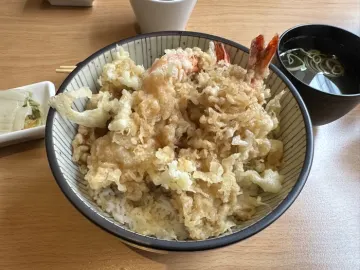
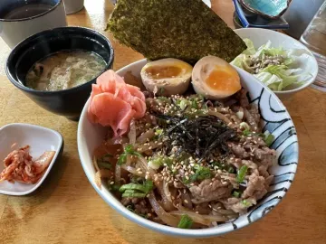
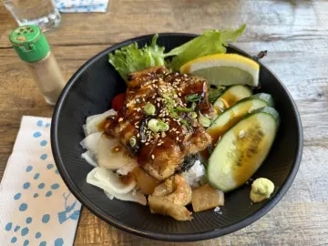
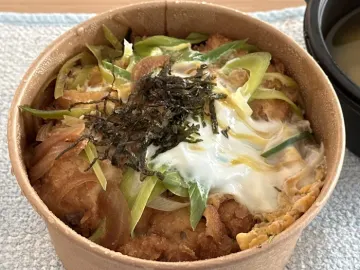
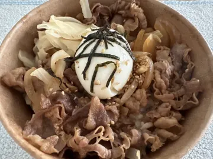
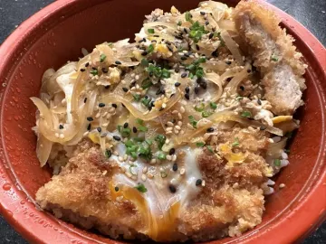
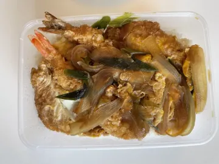

Katsudon, Gyudon & Donburi in Helsinki: A Guide to Japanese Rice Bowls
Donburi, a bowl of rice with something delicious on top, is the comfort food of Japan. It's also one of the best ways to judge a Japanese kitchen, because there's nowhere to hide. Here's what's what, and how to find the best one in Helsinki.
The main types of donburi

| Dish | What's on the rice |
|---|---|
| Katsudon (カツ丼) | A breaded pork cutlet (tonkatsu) simmered with onion and egg in a sweet-savoury dashi sauce |
| Gyudon (牛丼) | Thinly sliced beef and onion simmered in soy, mirin and dashi, often topped with pickled ginger |
| Oyakodon (親子丼) | Chicken and soft-set egg. The name means "parent and child" |
| Unadon (鰻丼) | Grilled eel glazed with a sweet tare sauce |
| Tendon (天丼) | Tempura with a drizzle of sauce |
| Kaisendon / Chirashi | Assorted raw seafood or sashimi |
What makes a good katsudon or gyudon
- Katsudon: the cutlet should still be partly crisp on top, with the egg just set and silky, never rubbery. The sauce should soak into the rice without turning it into soup.
- Gyudon: the beef is thin and tender, the onions soft and sweet, and there's enough sauce (tsuyu) to flavour the rice. Add beni shōga (red ginger) and a raw or onsen egg if they offer it.
- The rice: short-grain Japanese rice, freshly cooked. It's half the dish.
From the Savory Scores data
Top-rated donburi in Helsinki
| Photo | Dish | Restaurant | Score | Authenticity | Ratings | Last rated |
|---|---|---|---|---|---|---|
 | Tendon | KotoHelsinki | 10 | 10 | 1 | Apr 2024 |
 | Gyudon | Genki SushiVantaa | 10 | 8 | 1 | May 2022 |
 | Katsudon | Restaurant KabukiHelsinki | 10 | 10 | 1 | Apr 2022 |
 | Unadon | Ravintola KamomeHelsinki | 9 | 7 | 1 | May 2025 |
 | Katsudon | KotoHelsinki | 9 | 9 | 1 | Jun 2024 |
 | Gyudon | Fuji BiyoriHelsinki | 9 | 4 | 1 | Jul 2023 |
 | Katsudon | Ravintola DomoHelsinki | 9 | 9 | 1 | Oct 2022 |
 | Ebi furai donburi | Restaurant KabukiHelsinki | 9 | 9 | 1 | May 2022 |
Based on 35 ratings at 19 places in the Helsinki area, as of October 2026. Scores and authenticity are averages out of 10. Most dishes have only one or two ratings so far, and menus change, so check the app for the live ranking. Ate somewhere that should be on this list? Rate it in Savory Scores.
How to find the best katsudon and gyudon in Helsinki with Savory Scores
This is exactly what Savory Scores was built for. A Google search for "katsudon Helsinki" shows a handful of restaurant pages. Savory Scores shows you every katsudon in town, side by side.
- Search "Katsudon" (or Gyudon, Oyakodon, Unadon…). You'll see each restaurant's version with a photo and its average score, from places like Restaurant Kabuki, Ravintola Domo, Koto, Genki Sushi and Saburo Shokudou.
- Sort by score to see the crowd's favourite, or by authenticity to find the one closest to Japan.
- Tap "Read about Katsudon" if you're new to the dish.
- Try one and rate it. After two or three bowls you can compare them in your own top list and stop guessing.
Donburi is also a classic Japanese lunch in Helsinki: filling, quick, and usually good value.
Find your favourite in Helsinki. Savory Scores is free for iPhone and iPad: search a dish, compare every version in town, and rate it in one tap.